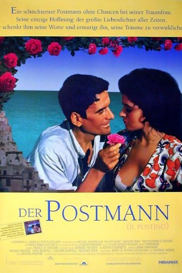

#3288 Der Postmann
Alternativ: Il Postino: The Postman (Englischer Titel)
Auszeichnungen: 1 Oscars gewonnen für 4 Oscars nominiert 1 BAFTA-Awards gewonnen
 
 IMDB-Wertung: 7.7 / 10
IMDB-Wertung: 7.7 / 10  Metascore: 81
Metascore: 81 
Filmische Umsetzung des Romans "Ardiente Paciencia" von Antonio Skármeta durch Michael Radford. Ein Dichter, der sich weitab seines Ruhms auf eine kleine Insel zurückgezogen hat, freundet sich mit einem einfachen Fischerjungen an, der ihm seine Fanpost bringt.
Jahr: 1994
Dauer: 113 Minuten
FSK: 0
Land: Italien Studio: BVHETonspuren:
Untertitel:
Auflösung: 1080p (1808x1080) Größe: 8949 MB
Genre: Drama, Komödie, Liebe, Biographie
Regisseur: Michael Radford, Massimo Troisi
Drehbuch: Antonio Skármeta, Furio Scarpelli, Giacomo Scarpelli, Anna Pavignano, Michael Radford
Soundtrack: Luis Bacalov
Darsteller:
 Philippe Noiret als Pablo Neruda
Philippe Noiret als Pablo Neruda- Maria Grazia Cucinotta als Beatrice Russo
- Anna Bonaiuto als Matilde
- Massimo Troisi als Mario Ruoppolo
 Renato Scarpa als Telegrapher
Renato Scarpa als Telegrapher- Linda Moretti als Donna Rosa
- Sergio Solli als
- Carlo Di Maio als
- Nando Neri als
- Vincenzo Di Sauro als
- Orazio Stracuzzi als
- Alfredo Cozzolino als
- Mariano Rigillo als Di Cosimo
Datei: X:\1994\Postmann, Der (1994, FSK0, 1808x1080).mkv seit 03.03.2016
Festplatte: HD 1992-1995
 Es gibt insgesamt 67 Filme in der Gruppe '1994'
Es gibt insgesamt 67 Filme in der Gruppe '1994'